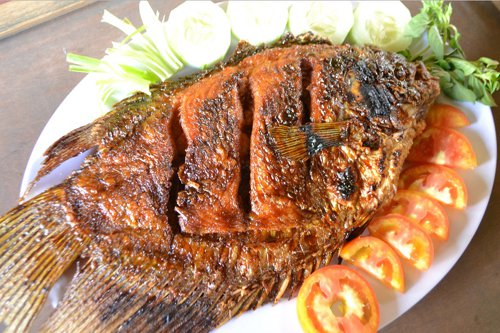

Aroma rasa harum dari ikan bakar gurame tentunya akan menggugah selera anda, ditambah dengan sambal kecap pedas menjadikan masakan ikan gurame bakar menjadi sangat special.
Bahan-bahan untuk membuat Ikan Gurame Bakar:
- -2 ekor ikan gurame ( 800 gram), dikerat-kerat
- -2 sendok teh air jeruk nipis
- -1 sendok teh garam
- -5 sendok makan air asam jawa
- -5 sendok makan kecap manis
- -3 sendok makan minyak goreng
Bahan bumbu halus:
- -5 buah cabai merah keriting
- -4 buah cabe rawit merah
- -6 butir bawang merah
- -3 siung bawang putih
- -2 sendok teh ketumbar
- -2 cm jahe
- -1 sendok teh garam
Bahan Sambal Kecap:
- -5 sendok makan kecap manis
- -1buah tomat, buang bijinya, lalu potong-potong
- -5 buah cabe rawit merah, diiris-iris
- -5 buah cabe rawit hijau, diris-iris
- -2 butir bawang merah, diiris-iris
- -½ sendok teh air jeruk nipis
Langkah-langkah:
- 1.Yang pertama dilakukan adalah merendan ikan gurame dengan mengyunakan iar jeruk nipis dan juga garam, kemudian diamkan sekitar 15 menit.
- 2.Selanjutnya adalah panaskan minyak untuk menumis, kemudian tumis bumbu halus hingga aroamnya tercium harum.
- 3.Setelah itu tambahkan asam jawa, lalu aduk hingga rata. Lalu angkat simpan pada mangkuk, kemudian tambahkan kecap manis, lalu aduk hingga rata.
- 4.Setelah itu ikan gurame dilumuri dengan bahan bumbu, lalu bakar di atas panggangan hingga matang.
- 5.Ikan gurame bakar siap disajikan bersama dengan sambal kecapnya.